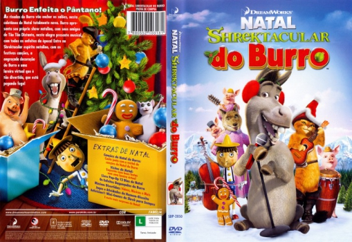

Outro Título:Donkey's Christmas Shrektacular
País:United States, 8 minutos
Idiomas falados:Inglês, Português
Gênero(s):Fantasia, Animação, Comédia, Família
Diretor(s):Walt Dohrn
Escritor(es):Ryan Crego, Walt Dohrn
Codec:MPEG-2 (DVD)
Número: 5829


Certificado:
Sinopse:
As risadas do Burro vão encher os salões, nesta coletânea de Natal totalmente nova. Burro apresenta seu próprio show natalino, com seus amigos de Tão Tão Distante, neste alegre presente musical, com todos os enfeites da época! Entre no SHREKTACULAR espírito natalino, com as festivas canções, a engraçada Decoração do Burro e uma hilariante lareira virtual que é tão cômica, que está pegando fogo!
Elenco:


Tipo de mídia: DVD5,
Legendas: Português, Sem Legendas
Alugado: Não
Tela: Anamorphic Widescreen